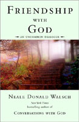

Friendship with God
an uncommon dialogue

Page Contents: Quotes - Excerpts
Quotes:
- "You must be willing to suspend what you imagine you
already know about God in order to know God as you never
imagined" - Page 65
- "...in the irony of all ironies, you may have to abandon
the church in order to know God" - Page 67
- "...your mind holds the past, your body holds the
present, your soul holds the future" - Page 74
- "If you want to access what you remember about God, look
to your mind. If you want to access what you feel about God,
look to your body. If you want to access what you know about
God, look to your soul" - Page 74
- "Your souls knows everything—past, present, and future"
- Page 75
- "...true self love disappears the ego, it does not
enlarge it. Put another way, the larger your understanding
of Who You Really Are, the smaller your ego" - Page 77
- "When you know Who You Really Are fully, your ego is
fully gone" - Page 77
- "Confusion is the first step toward wisdom. Folly is
thinking you have all the answers" - Page 77
- "...if you do not believe that you create your own
reality, then you will experience your reality as something
you did not create . . . proving that you create your own
reality" - Page 82
- "...everything that you see is a reflection of you" -
Page 82
- "Laughter is good for the soul" - Page 84
- "Do not seek to forget your past, seek to change your
future" - Page 85
- "Do not be who you thought you were, be who you wish you
were" - Page 87
- "Every decision you make—every decision—is not a
decision about what to do. It's a decision about Who You
Are" - Page 88
- "The secret of life is not to have everything you want,
but to want everything you have" - Page 109
- "...the purpose of life is to re-create yourself anew in
the next grandest version of the greatest vision ever you
held about Who You Are" - Page 114
- "There is no form and there is no manner in which the
expression of love that is pure and true is inappropriate" -
Page 155
- "Nothing inhibits your loving each other more than the
thought that you have something to lose" - Page 168
- "When you love someone, you grant them total freedom to
be who they are, for this is the greatest gift you could
give them, and love always gives the greatest gift" - Page
169
- "You cannot experience what you do not allow others to
experience" - Page 171
- "Live your life for a new reason. Understand that its
purpose has nothing to do with what you get out of it, and
everything to do with what you put into it. This is also
true of relationships" - Page 174
- "Honesty is the highest form of love" - Page 180
- "The less you need from someone, the more you can love
them" - Page 184
- "How can you need nothing from someone you love?
By loving them not for what they can give you, but simply
for who they are" - Page 185
- "Reject nothing of the world, and no one in it. Yet
while you are in the world, and the world is in you,
remember that you are larger than it. You are the creator of
it, for you are creating your own reality as surely as you
are experiencing it. You are both the creator and the
created" - Page 209
- "Nothing happens in life by accident. Nothing.
Nothing occurs in your life by chance. Nothing.
Nothing takes place without producing the opportunity for
real and lasting benefit to you. Nothing at all.
The perfection of every moment may not be apparent to you,
yet that will make the moment no less perfect. It will be no
less a gift." - Page 241
- "What you think about, what you focus on, will be made
manifest in your in individual present reality" - Page 251
|